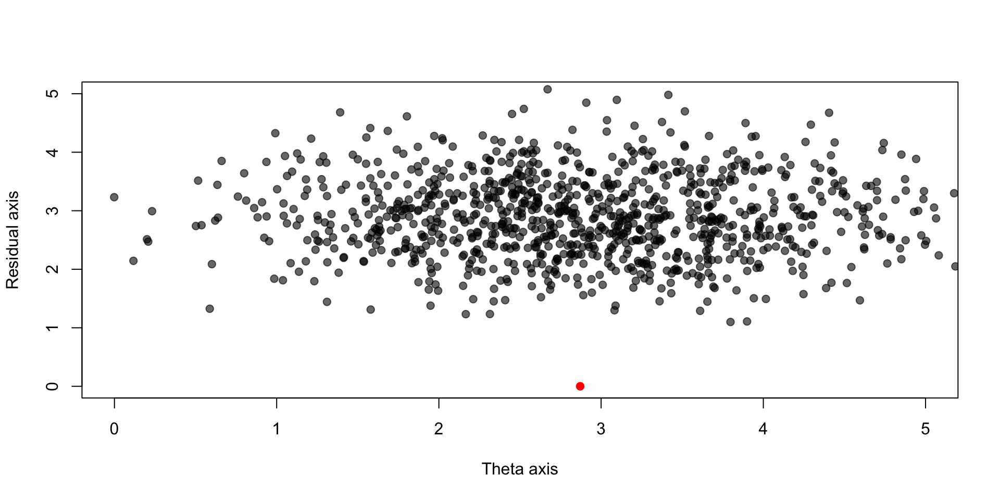
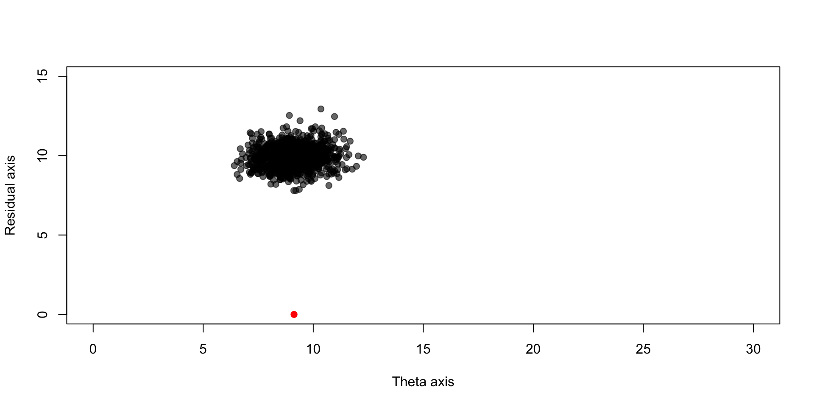
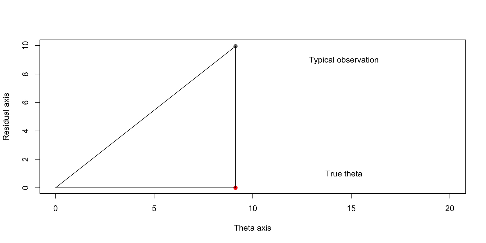
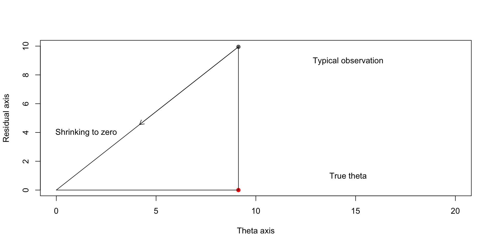
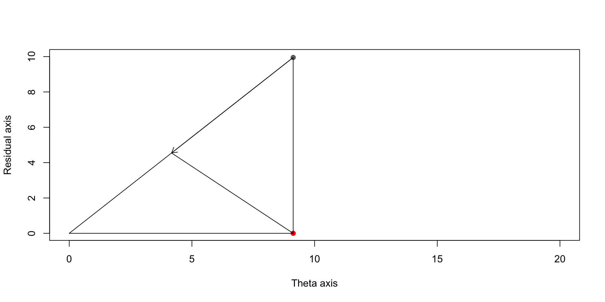
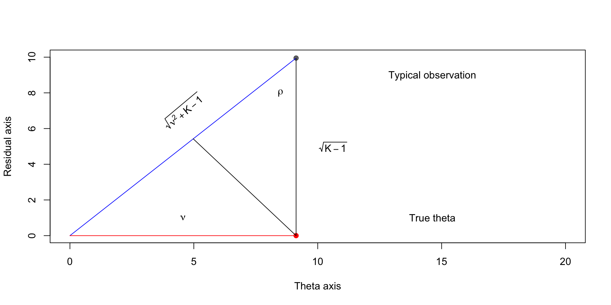
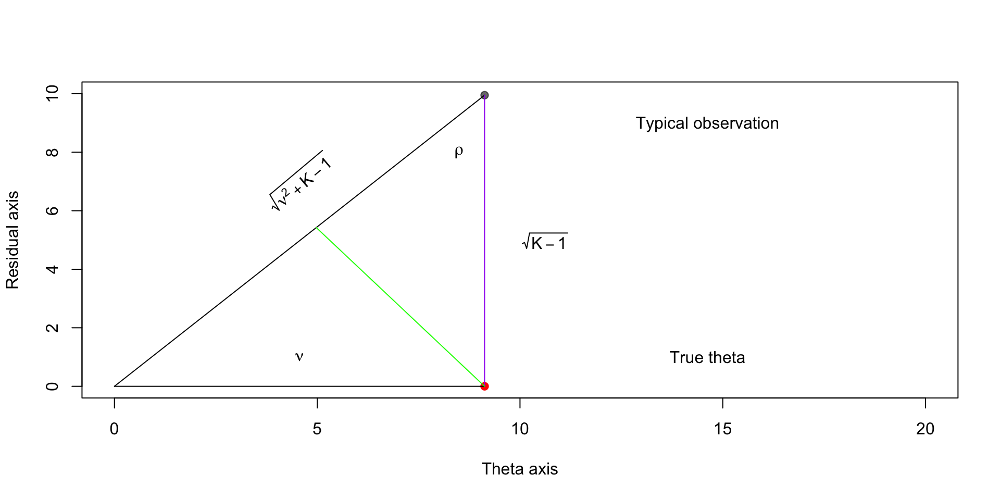
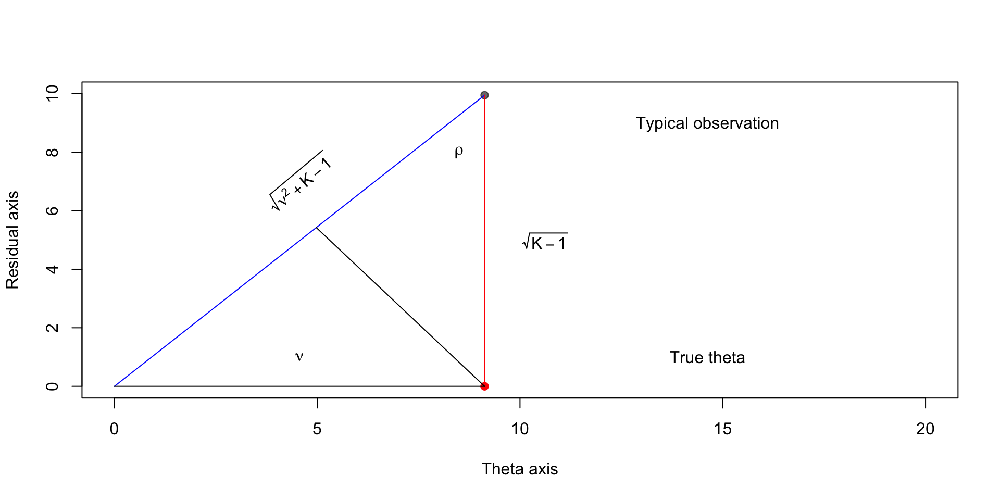
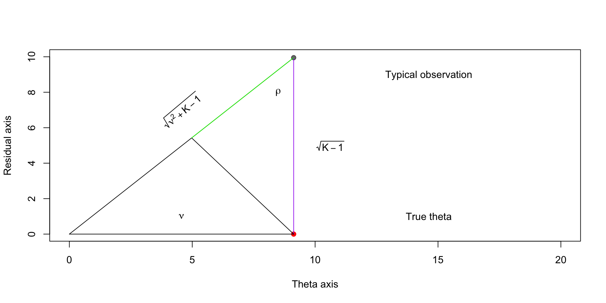
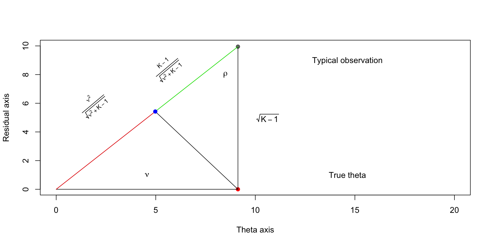

Suppose that we’re interested in estimating \(K\) independent means collected into a vector \(\boldsymbol{\theta}\), about which we observe a normally distributed RV \(\mathbf{X}\), with realization \(\mathbf{x}\)
\[ \mathbf{X} \mid \boldsymbol{\theta} \sim \text{MultiNormal}(\boldsymbol{\theta}, I_K) \]
We’ll measure the quality of an estimator for \(\boldsymbol{\theta}\), \(\boldsymbol{\delta}(\mathbf{x})\) with a function \(L(\boldsymbol{\theta}, \boldsymbol{\delta}(\mathbf{x}))\) \[ L(\boldsymbol{\theta}, \boldsymbol{\delta}(\mathbf{x})) = \sum_{k=1}^K (\boldsymbol{\theta}_k - \boldsymbol{\delta }_k(\mathbf{x}))^2 \]
We can compare estimators at a given \(\boldsymbol{\theta}\) by taking expectations of \(L(\boldsymbol{\theta}, \boldsymbol{\delta}(\mathbf{X}))\) over \(\mathbf{X} \sim \text{MultiNormal}(\boldsymbol{\theta}, I_K)\)
\[ R(\boldsymbol{\theta}, \mathbf{\delta}) = \Exp{L(\boldsymbol{\theta}, \boldsymbol{\delta}(\mathbf{X}))} \]
James and Stein (1961) show that the “usual estimator” \(\boldsymbol{\delta}^\text{usual}(\mathbf{x}) = \mathbf{x}\) has uniformly (i.e. for all \(\boldsymbol{\theta}\)) higher risk than \(\boldsymbol{\delta}^{\text{JS}}(\mathbf{x})\)
\[ \delta^{\text{JS}}(\mathbf{x}) = \lp 1 - \frac{p-2}{\sum_{k=1}^K \mathbf{x}_k^2} \rp \mathbf{x} \]
Brown and Zhao (2012) works through the geometric intuition behind the estimator.
It requires that we change our basis for \(\R^K\) from the standard basis to a basis in which one vector is pointed in the direction of \(\boldsymbol{\theta}\), and the rest are orthogonal to that direction.
The way we would do that is to do something like:
X <- theta + rnorm(10)
X_in_new_basis <- t(basis_mat) %*% X
red_X <- c(X_in_new_basis[1], sqrt(sum(tail(X_in_new_basis^2,-1))))
plot(red_theta[1],0, xlim = c(0,5), ylim = c(0,5),
xlab = "Theta axis", ylab = "Residual axis",
col = "red", pch = 19)
Xs <- sweep(matrix(rnorm(1e4), 10, 1e3), 1, theta, FUN = "+")
trans_Xs <- t(basis_mat) %*% Xs
trans_Xs_red <- cbind(trans_Xs[1,], sqrt(colSums(trans_Xs[2:10,]^2)))
points(trans_Xs_red[,1], trans_Xs_red[,2],pch = 19, col = scales::alpha("black",0.6))
The point cloud is shifted above the true theta; this shift gets worse as dimension of \(\boldsymbol{\theta}\) increases

Explaining why the cloud shifts up as \(K\) increases requires a bit of normal theory
Recall that for a multivariate normal RV \(\mathbf{X}\) with parameters \(\boldsymbol{\theta}\) and \(I_K\), \(A^T \mathbf{X}\) is again multivariate normal with mean \(A\boldsymbol{\theta}\) and covariate \(A^T A\).
The transformation we’ve done is \(Q^T \mathbf{X}\) where \(Q^T Q = I_K\). Thus \(Q^T \mathbf{X} \sim \text{MVN}(Q^T \boldsymbol{\theta}, I_K)\)
The way we’ve represented \(Q^T \mathbf{X}\) is by the first coordinate \(Q_1^T \mathbf{X}\) and the 2-norm of the last \(K-1\) elements:
\[ \lp Q_1^T \mathbf{X}, \sqrt{\sum_{k=2}^K (Q_k^T \mathbf{X})^2}\rp \]
The RVs \(Q_k^T \mathbf{X}\) are independent mean-zero normal RVs, a sum of \(K-1\) squared normal RVs is chi-squared \(K - 1\)
\[ Q^T_k (\boldsymbol{\theta} + \mathbf{Z}) = Q^T_k\mathbf{Z}, k > 1 \]
Ideally we would like to shrink our estimators toward \(\boldsymbol{\theta}\), but in the absence of knowledge of this point, we can shrink toward the origin:





\[ \begin{aligned} \sin \rho & = \frac{\textcolor{red}{\nu}}{\textcolor{blue}{\sqrt{\nu^2 + K - 1}}} \end{aligned} \]
\[ \begin{aligned} \sin \rho & = \frac{\textcolor{green}{y}}{\textcolor{purple}{\sqrt{K - 1}}} \end{aligned} \]
Implies that \(y = \sqrt{K - 1} \frac{\nu}{\sqrt{\nu^2 + K - 1}}\)
Compare this to \(\sqrt{K-1}\), which is how far away the typical observation is



\[ \begin{aligned} \cos \rho & = \frac{\textcolor{red}{\sqrt{K-1}}}{\textcolor{blue}{\sqrt{\nu^2 + K - 1}}} \end{aligned} \]
\[ \begin{aligned} \cos \rho & = \frac{\textcolor{green}{y}}{\textcolor{purple}{\sqrt{K - 1}}} \end{aligned} \]
Implies that \(y = \frac{K - 1}{\sqrt{\nu^2 + K - 1}}\).
This means that we shrink the point \((\nu, \sqrt{K-1})\) to the origin by the amount \(\lp 1 - \frac{K - 1}{\nu^2 + K - 1}\rp\)
Then the estimator in this new basis is \[ \lp 1 - \frac{K - 1}{\nu^2 + K - 1}\rp\begin{bmatrix} \nu \\ \sqrt{K - 1} \end{bmatrix} \]
Recall that \((\nu, \sqrt{K-1})\) is a “typical” point \(Q^T \mathbf{X}\), or \((Q_1^T \mathbf{X}, \sqrt{\sum_{k=2}^K (Q_k^T \mathbf{X}})^2)\)
The norm of \((Q_1^T \mathbf{X}, \sqrt{\sum_{k=2}^K (Q_k^T \mathbf{X}})^2)\) is \(\sqrt{\sum_{k=1}^K (Q_k^T \mathbf{X})^2}\)
We can write this in matrix notation as \(\mathbf{X}^T Q Q^T\mathbf{X}\)
Then
\[ \begin{aligned} \mathbf{X}^T Q Q^T\mathbf{X} & = \mathbf{X}^T \mathbf{X} \end{aligned} \]
Then \[ \lp 1 - \frac{K - 1}{\nu^2 + K - 1 } \rp = \lp 1 - \frac{K - 1}{\mathbf{X}^T \mathbf{X} } \rp \]
This implies
\[ \lp 1 - \frac{K - 1}{\mathbf{X}^T \mathbf{X} } \rp \mathbf{X} \] is optimal from a geometric standpoint
The factor of \(K-1\) in the numerator is not quite right, and the \(K-2\) found in the James-Stein estimator can be motivated by an empirical Bayes argument.
When estimating \(\boldsymbol{\theta}\) from \(\mathbf{X} \sim \text{MVN}(\boldsymbol{\theta}, I_K)\), \[\norm{\mathbf{X}}^2 = \norm{\boldsymbol{\theta}}^2 + p + O_p(\sqrt{p})\]
So \(\norm{\boldsymbol{\theta}} = \sqrt{\norm{\mathbf{X}}^2 - p - O_p(\sqrt{p})}\) or
\[\norm{\boldsymbol{\theta}} \approx \norm{\mathbf{X}} \lp 1 - \frac{p + O_p(\sqrt{p})}{2\norm{\mathbf{X}}^2} \rp\]
The norm of \(\mathbf{X}\) is likely to be too large by a factor of approximately \(p\), so we should shrink \(\mathbf{X}\)
An alternative derivation of the James-Stein estimator can be motivated by a quasi-Bayesian argument, which is otherwise known as “empirical Bayes” estimation
Suppose \[ \begin{aligned} \boldsymbol{\theta} & \sim \text{Normal}(0, b^2 I_K) \\ \mathbf{X} \mid \boldsymbol{\theta} & \sim \text{Normal}(\boldsymbol{\theta}, I_K) \end{aligned} \]
Then for fixed \(b\), we just have a collection of univariate normal posteriors, where the posterior mean for \(\boldsymbol{\theta}_k\) is \[ \mathbf{X}_k \frac{b^2}{b^2 + 1} = \mathbf{X}_k\lp 1 - \frac{1}{b^2 + 1} \rp \]
We don’t know \(b\), so we need to estimate it from the data. One approach is to come up with an unbiased estimator for \((b^2 + 1)^{-1}\)
Marginalizing over \(\boldsymbol{\theta}\), we get that \[ \begin{aligned} \mathbf{X} & \sim \text{Normal}(\mathbf{0}, (b^2 + 1)I_K) \end{aligned} \]
We know the distribution for \[\frac{S^2}{b^2 + 1} = \sum_{k=1}^K \lp\frac{\mathbf{X}_k}{\sqrt{b^2 + 1}}\rp^2\]
\[ \frac{S^2}{b^2 + 1} \sim \text{Chi-squared}(K) \]
Implies that \((b^2 + 1) / S^2\) is inverse chi-square and \(\Exp{(b^2 + 1) / S^2} = \frac{1}{K - 2}\)
Then \[ \begin{aligned} \frac{K-2}{b^2 + 1}\Exp{(b^2 + 1) / S^2} & = \frac{1}{b^2 + 1}\\ \Exp{K - 2 / S^2} & = \frac{1}{b^2 + 1} \end{aligned} \]
Putting it all together \[ \Exp{\boldsymbol{\theta}_k \mid \mathbf{X}_k} = \mathbf{X}_k\lp 1 - \frac{K - 2}{\mathbf{X}^T \mathbf{X}} \rp \]